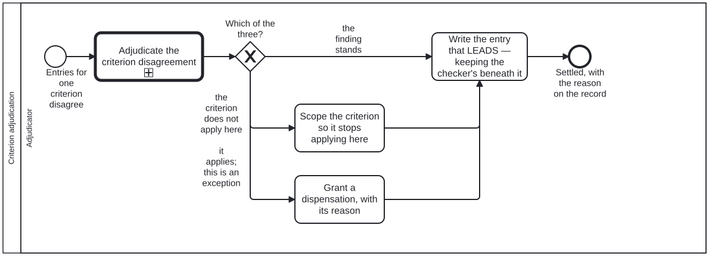

Generated from
cat-harness/processes/sdlc/criterion-adjudication.bpmnbygen-processes-viz.ts— do not edit here. All processes
Process_CriterionAdjudication · advisory · 4 step(s)
Two reviewer entries for ONE QA criterion disagree: ask the adjudication, then do the one of three things that a criterion disagreement admits.
You are in this process when the disagreement is about a criterion — a script failing what a reviewer passed, an agent and a person reading the same block differently. If what disagrees is not a criterion, this is the wrong process and adjudication.bpmn is the one to call directly, with your own outcomes.
The three outcomes are legitimate in the same way, and it is not which one is chosen: the finding stands, the criterion does not apply here and should be scoped, or it applies and this is a stated exception. All three converge on A_RecordEntry, because what makes an outcome sound is that its reason was recorded.
ADVISORY at the process level, for the reason the adjudication itself is: a judgement cannot be gated, since the whole reason it was entered is that the mechanism ran out of facts. What is NOT relaxable is A_RecordEntry. A judgement nobody wrote down is indistinguishable from a checker that was never run, so the judgement is free and the record is not.

| lane | role | what it does here |
|---|---|---|
| Adjudicator | adjudicator |
One lane, because every step here is the adjudicator’s: asking the question, choosing among the answers, and writing the entry. The feedback provider’s lane is in adjudication.bpmn, where stating a finding happens — a provider has no entitlement to settle what it reported, and drawing it here would suggest otherwise.The role admits person and agent. refresh-materialized already gives the reason in its own words — “a human or agentic decision, never a merge rule” — and the steps are plain tasks rather than user tasks so the diagram does not assert a person where an agent is legitimate. |
Every one of the 4 step(s) is documented.
| step | lane | skill / sub-process | what it does |
|---|---|---|---|
Adjudicate the criterion disagreementCall_Adjudicate |
Adjudicator | calls Adjudicationadjudication |
The shared judgement — entry condition, untainted dispatch, person-or-agent restriction — asked with THIS question’s permitted answers. cat-harness.processes:adjudication codes sits here rather than on A_Adjudicate inside it because the answers depend on what was asked, and the gateway below is what acts on them: the engine refuses a mismatch between the two.Process_Adjudication may also leave at End_NotAdjudicable — one entry and no other side is a review or a gate, not a disagreement — in which case nothing below runs and there is nothing to record. |
Scope the criterion so it stops applying hereA_ScopeCriterion |
Adjudicator | adjudication |
One edit to the criterion rather than ten overrules on the blocks it should never have covered. This branch is the one an adjudicator under time pressure converts into a dispensation, and the conversion is a defect: a dispensation lapses when the source moves, so a mis-scoped criterion granted its way past comes back every time anybody touches the block. |
Grant a dispensation, with its reasonA_Dispensation |
Adjudicator | adjudication |
The rule applies and this subject is a stated exception. A kind: "human" entry with result: "pass" overrides the script’s fail for that criterion, and ONLY while its field_hash matches the current source — so the dispensation is scoped to the version it was granted against, lapses when the block changes, and never becomes precedent. There is nothing to overturn later; the source moving overturns it.A dispensation with no notes is not a dispensation. It is an override somebody applied to get to green, and nobody can review it afterwards — which is why this step is not relaxable. |
Write the entry that LEADS — keeping the checker’s beneath itA_RecordEntry |
Adjudicator | adjudication |
Not relaxable, and the one step here that is not. A judgement nobody wrote down is indistinguishable from a checker that was never run, so the judgement is free and the record is not. Do not resolve the disagreement away: both entries stay, the adjudication on top under the sweep’s most-recent-matching-hash rule. A disagreement between a checker and a reviewer is information, and somebody re-running the check next month needs to find that a checker read it differently rather than a clean pass. /api/relevance/adjudicate reached the same rule independently — human_adjudicated written alongside, never over, the agent’s assessed_by. |
Every one of the 1 decision(s) is documented.
| decision | what decides it | branches |
|---|---|---|
Which of the three?GW_Outcome |
The three are legitimate in the same way: what makes an outcome sound is not which one it is but that its reason was recorded. All three converge on A_RecordEntry for exactly that reason. | the finding stands → Write the entry that LEADS — keeping the checker’s beneath it the criterion does not apply here → Scope the criterion so it stops applying here it applies; this is an exception → Grant a dispensation, with its reason |